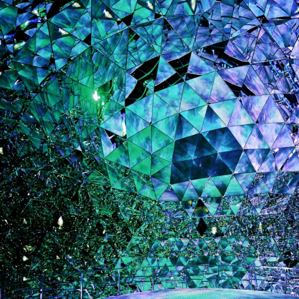
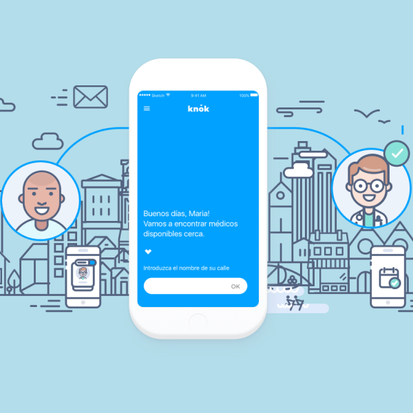
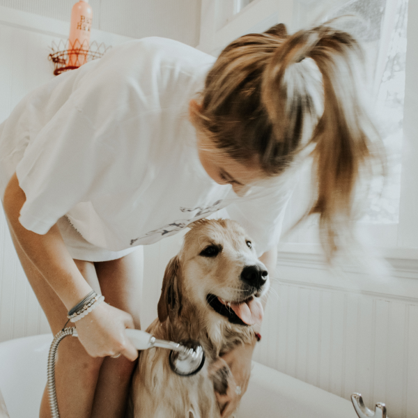

My name is Mariane Jobet and I am an Experience Designer based in London.
I am currently working within the UX Design team at Brilliant Basics
where I help our clients engage with their audience through user-centred solutions and brand defining experiences.
You can scroll down to see my work, or read what people have to say about me.
If you have a project you would like to chat about, just get in touch. You can also find me here:

Swarovski
In-Store Digital Experience
When Swarovski decided to redesign their entire store experience to attract millennials, Hugo & Cat
had the chance to collaborate with UXUS (consumer experience), Urquiola (interior designs) and Light iQ (light design)
to define the experience for the digital ecosystem.
For that project, I had the opportunity to run user-tests on their current in-store touchpoints
and work closely with the various designers to define the purpose and concept of each digital touchpoint.
In celebration of season 7 of Game of Thrones, Tourism Ireland commissioned an 80 meters
long medieval-style tapestry depicting every episode of the show. Hugo & Cat, as their digital
partners, created a website to allow users to visualise the tapestry.
A few months later,
I was asked to test out possible AR applications and concepts that would encourage users to
engage with Ireland.com content through an immersive experience. I had the opportunity
to design an AR proof of concept allowing users to unravel the tapestry in their own home, reusing
assets and development work from the existing digital platform.
Hugo & Cat was tasked to support the sub-brands of StanleyBlack&Decker in their marketing
planning activities. To inform those future schedules, my team and I ran a series of workshops
for Dewalt, Stanley Tools and Facom.
Following these sessions, I produced personas and customer journey maps for each of the
brands, helped them identify opportunities matching their individual goals and supported
them in their prioritisation tasks.
Experience Center - Digital Touchpoints Proposition
When Shimano announced their intention to open an Experience Centre, Hugo & Cat had a chance
to make a proposition for the digital vision. The ambition behind the project: to bring together
cycling, fishing and rowing enthusiasts from around the world to enjoy a multidimensional sensorial
experience.
Based on the 3D models of the space, we had 2 weeks to identify the three key personas
matching the 3 disciplines as well as concept, design and mockup each digital touchpoint.
During the summer of 2018, surveys suggested that 40% of smartphone owners had developed some sort of
digital-related addiction, and 70% of those users wanted helped to manage their
smartphone consumption.
Hugo&Cat asked me to reflect on these new user's expectations towards digital health and how the industry was adapting. Could this
be the start of significant change in our relationship with technology? And how did we get here in the first place?

Knok Healthcare
Client Project
Knok is a healthcare mobile app that provides access to primary healthcare
connecting doctors and patients in the same location. When they decided to
implement a video appointment feature, our team had the chance to redesign the
whole flow to ensure the new feature could seamlessly within the app.

Google Interview
Design Challenge
As part of my interview process for the position of Interaction Designer at Google,
I was tasked to design a solution that would help prospective pet adopters to
be matched with the perfect companion based on their lifestyle.
For the final stage of the process, I had the chance to present my concept and designs
to the Google Cloud Platform team in Warsaw.
This is a password protected project, contact me to request access.